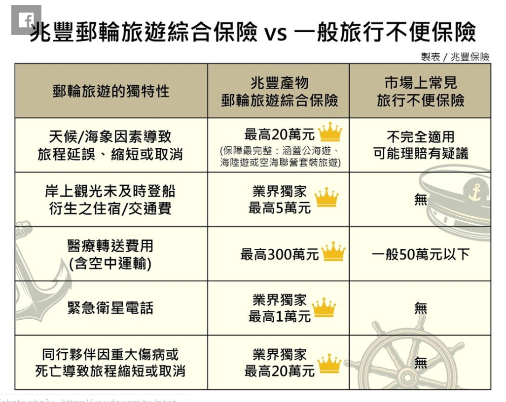

搭郵輪要如何保險?

全台首張「郵輪旅遊綜合險」要來了 旅客最快12月可投保
台灣搭乘郵輪的人數近年來不斷攀升，金管會今（10）日核准兆豐產險申請的新型態保險商品，成為國內市場上首張「郵輪旅遊綜合險」，最快12月中下旬開始販賣，明（2020）年1月1日起可在兆豐產險的官方網站上進行網路投保。 金管會保險局副局長張玉煇表示，這是新型態保險商品，申請採用核准制，也是首張提供郵輪旅遊保障的保單，主要針對消費者採用郵輪旅遊需求來設計，內容涵蓋郵輪旅遊途中的風險保障，包括輪船旅遊、旅平險和海外救助等套裝行程。 張玉煇進一步指出，兆豐產險推出的郵輪旅遊綜合顯，可承保郵輪旅遊10大風險，首先是第三人責任險；再者是旅行文件損失保險；第三為行李損失保險；第四為行李延誤保險，第五為旅程取消保險；第六為旅程縮短保險；第七為旅程延誤保險。 第八是郵輪假期保險，也就是在海上旅遊期間，旅客上岸觀光，卻發生當地暴動或天災等意外事故，錯過登船時間，導致行程取消或提早結束的慰問金；第九是郵輪緊急衛星電話保險，最後則是海外急難救助費用保險。
國人愛搭郵輪出遊，產險業順勢推出新型態郵輪保險，將在明年1月1日開放網站投保。兆豐產申請新形態郵輪旅遊轉輸保障保險商品，昨（10）日獲得金管會保險局核准，訴求為市場上第一個「海空聯誼套裝行程」，估計500萬套裝保額，三天兩夜不靠岸行程每人保費約567元。 金管會保險局官員昨日指出，此為新形態商品，申請用核准制，主要針對消費者採用郵輪需求設計，風險保障涵蓋遊輪旅行可能發生的旅遊風險，主要可協助投保人分散在郵輪上的不幸碰撞、以及搭乘郵輪旅程中的旅遊不便險保障。 金管會保險局官員指出，兆豐產的「海空聯誼套裝行程」涵蓋遊輪旅行可能發生的旅遊風險保障，包含第三人責任險、旅行文件損失保險、行李損失保險、行李延誤保險、旅程取消保險、旅程縮短保險、旅程延誤保險、遊輪假期保險、郵輪緊急衛星電話費用保險、海外急難救助被難保險、遊輪假期保險等。
郵輪旅遊的多元內容受民眾喜愛，但郵輪旅遊爭議時有所聞。兆豐保險率先察覺郵輪旅遊面臨的風險，許多並不在一般旅遊不便保險的保障範圍內，與台灣國際郵輪協會、觀光局、航港局及產險公會等專家學者研議設計，推出專為郵輪旅遊量身打造的「郵輪旅遊綜合保險」，12月10日獲保險局核准開賣，為國內首創的郵輪旅遊專屬保險。 郵輪旅遊結合海上住宿、航行，與靠港後岸上觀光行程，相較於一般搭飛機出遊，郵輪具有更不一樣的旅遊特性。但搭乘郵輪最擔心遇到因天候惡劣或海象不佳，導致旅程的延誤、縮短或取消靠港，甚至岸上觀光因大眾運輸工具的延遲使得未能及時登船，衍生額外住宿接駁費用；此外，郵輪在海上航行，因故使用對外聯繫的衛星電話，或需搭乘醫療直升機轉送，費用都相對昂貴。 不僅保障前述意外，兆豐保險還考慮到搭乘郵輪旅遊多為親朋好友一同，將同行夥伴因重大傷病或死亡，導致旅程縮短或取消也列在保障範圍，並擴大適用於國外郵輪旅遊行程，搭飛機前往海外乘船也有保障，是顧及海陸空全方位的郵輪旅遊綜合保險。
金管會今（10）日核准兆豐產險申請的新型態保險商品，成為國內市場上首張「郵輪旅遊綜合險」，最快12月中下旬開始販賣，明（2020）年1月1日起可在兆豐產險的官方網站上進行網路投保
